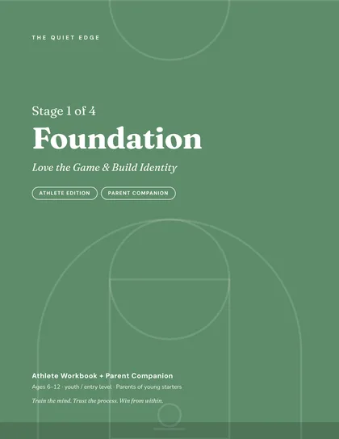
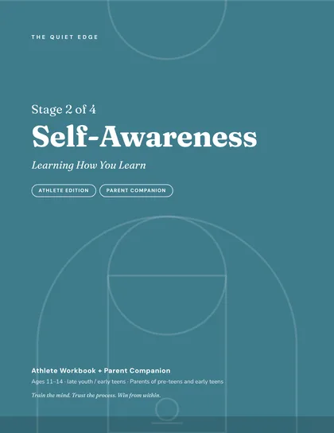
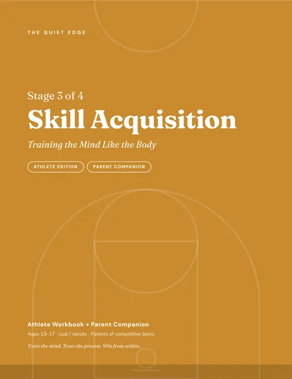
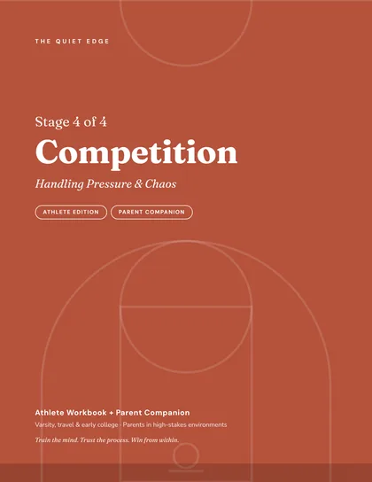
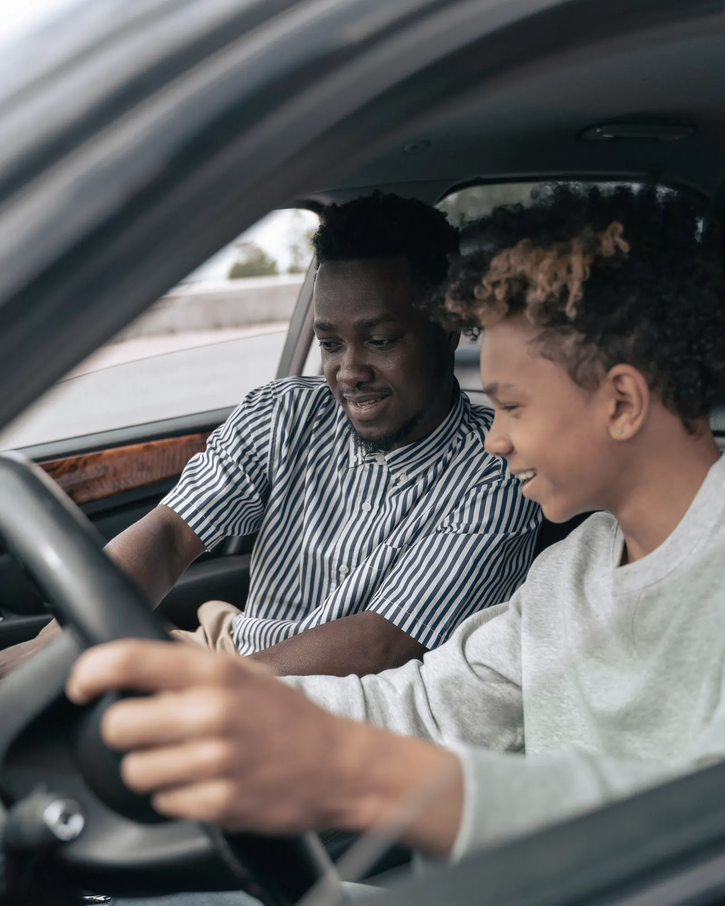
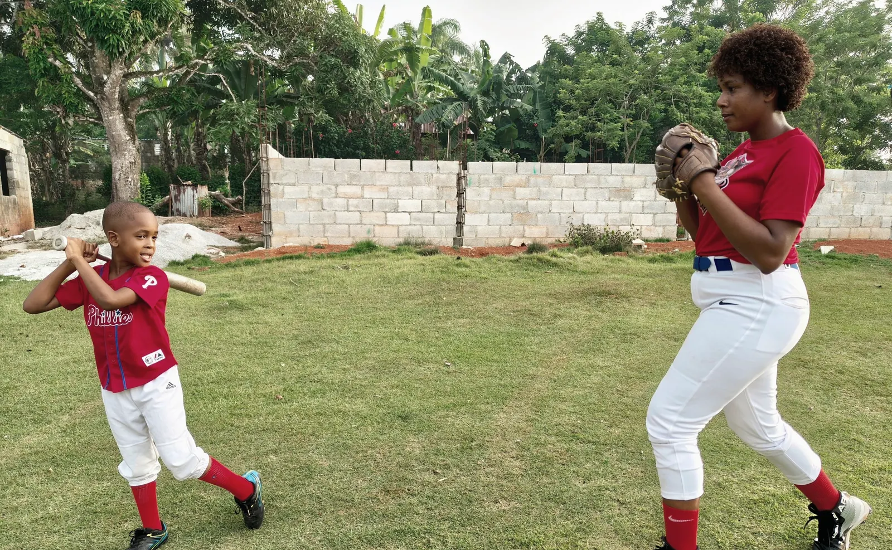

Same lesson.
Both seats.
The Quiet Edge trains the athlete and the parent with the same lesson, so the mental game your coaches teach at practice survives the car ride home.




Practice teaches it. The ride home keeps it.
Most programs coach the athlete and hand parents a code of conduct. We teach both the same lesson, in the same week, in the same words.
- 01
The athlete episode
Five minutes on one mental skill, and one exercise for the week.
- 02
The Parent Companion
The same topic from the front seat. What to say, and what to leave alone.
- 03
The ride home
One question that lets the athlete lead the conversation.
Same game. Different drive.
Kids who quit a sport are more than twice as likely to say they were pressured to play. The difference is rarely love. It is usually the next twenty minutes.
“So what happened on that last play?”
Minute one of a twenty-minute drive.

Four stages, in the order athletes grow.
Ten topics per stage, each in two editions. 98 short episodes in all, free to watch.
Foundation
Love the Game & Build IdentityFor when fun is fading and pressure is rising.
Self-Awareness
Learning How You LearnFor emotions, self-talk and comparison.
Skill Acquisition
Training the Mind Like the BodyFor inconsistency, perfectionism and burnout risk.

“The car ride home is where many athletes decide whether the game was safe to love.”
Let them lead. Silence is fine. Pick one question, not five.
What was the most fun part?
Who made a play you want to remember?
What’s one thing you did well, even today?
Do you want to talk now, or later?
What did you learn today?
What do you want to get better at next?
One language for every player and every parent.
A season plan your coaches run in ten minutes a week. Team licenses from $250.
Club programsKnow what to say on the drive home.
Start with the one-minute parent guide. Go further with a stage workbook.
Begin here